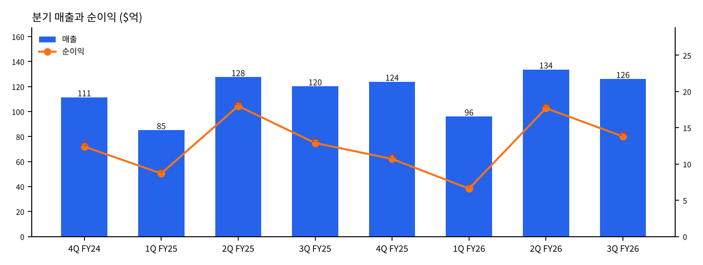

Deere는 농기계·건설장비를 팔고 구매자에게 금융도 제공한다. 농산물 가격과 농가 소득이 장비 수요를 좌우한다.
| 항목 | 내용 |
|---|---|
| 종목 | Deere (DE) · NYSE · 산업재(농기계·건설장비) · 일리노이 몰린 |
| 최근 분기(3Q FY26) | 매출 $126.1억, EPS $5.10 |
| 부문 | 생산·정밀농업, 소형농업·잔디, 건설·임업, 금융 |
| 직원 수 | 약 73,100명(트레이딩뷰) |
| 멀티플 | PER·PEG는 08~10 항목 표 참조 |
| 직책 | 인물 | 역할·특징 |
|---|---|---|
| 회장·CEO | 존 메이(John C. May) | "2026년이 현재 농기계 사이클의 바닥"이라고 설명 |
| CFO | 조시 젭슨(Josh Jepsen) | (확인 필요) |
경영 스타일: 사이클 대응. 재고와 주문을 조절해 바닥 구간에서도 마진을 지키는 방식이다.
자율 주행·정밀 파종 기술을 장비에 넣어 농가 효율을 높인다(회사 설명).
초기 주문 흐름, 중고 재고 개선을 바닥 신호로 본다.
다음 실적발표는 세 가지 질문에 답하는 자리다.
1. 대형 농기계가 바닥을 확인하나?
2. 건설·임업의 강세가 이어지나?
3. 관세 부담이 FY27에 커지나?
한 줄 판정 규칙: 첫 질문(대형 농기계 바닥)이 확인되면 약한 고리(① 수요)가 풀린다.
일정: FQ4 FY26 실적은 2026.11.25 발표 예정이다. FY27 가이던스도 함께 나온다.
| 분기 | 매출 | 순이익 | EPS | 조정 EPS | 특이 사항 |
|---|---|---|---|---|---|
| 4Q FY24 | $111.4억 | $12.4억 | 4.55 | 4.55 | |
| 1Q FY25 | $85.2억 | $8.7억 | 3.19 | 3.19 | |
| 2Q FY25 | $127.6억 | $18.0억 | 6.64 | 6.64 | |
| 3Q FY25 | $120.2억 | $12.9억 | 4.75 | 4.75 | |
| 4Q FY25 | $123.9억 | $10.7억 | 3.93 | 3.93 | |
| 1Q FY26 | $96.1억 | $6.6억 | 2.42 | 2.42 | |
| 2Q FY26 | $133.7억 | $17.7억 | 6.55 | 6.55 | |
| 3Q FY26 | $126.1억 | $13.8억 | 5.09 | 5.10 | 건설·임업 +18%, 농기계 -6% |
Deere 회계연도는 11월에 시작한다(3Q FY26은 2026.8.2 종료). 4Q FY26 실적은 2026.11.25에 발표된다. 매출은 트레이딩뷰 스캐너의 분기 총매출이라 회사가 발표한 순매출과 다를 수 있다. 매출·순이익·EPS(GAAP 희석)는 트레이딩뷰 스캐너, 조정 EPS는 트레이딩뷰 실적 페이지의 Reported 값이다. 분기 정렬은 오래된 분기→최신이다.

흐름 요약: 최근 분기 매출은 $126.1억로 전년 동기 $120.2억 대비 +4.9%, 순이익은 $13.8억(전년 $12.9억)다. 최근 4분기 GAAP EPS는 $17.99, 조정 EPS는 $18.00다.
| 항목 | 내용 | 3Q FY26 금액 | 비고 |
|---|---|---|---|
| 생산·정밀농업 | 대형 농기계 | $40.0억 | -6% |
| 소형농업·잔디 | 소형 트랙터 등 | $33.8억 | +12% |
| 건설·임업 | 건설 장비 | $36.2억 | +18% |
| 그 외(내 계산) | 금융 수익 등 | $16.1억 | 총 $126.1억에서 위 3개를 뺀 값 |

세 장비 부문이 비슷한 비중이다. 농기계는 약하고 소형·건설이 강했다.
Deere는 농가와 건설 현장의 생산성을 높이는 장비와 기술을 제공하는 것을 목표로 한다.
| 축 | 내용 |
|---|---|
| 제품 | 농기계·건설장비 |
| 금융 | 구매 금융 순이익 $2.19억 |
| 기술 | 정밀 농업 |

| 이동평균 | 값 | 종가 대비 | 위치 |
|---|---|---|---|
| 5일선 | $660.06 | -2.3% | 종가 아래 |
| 20일선 | $663.13 | -2.8% | 종가 아래 |
| 50일선 | $666.32 | -3.2% | 종가 아래 |
| 100일선 | $643.75 | +0.2% | 종가 위 |
| 200일선 | $614.40 | +4.9% | 종가 위 |
52주 고가 $721.22(2026-09-23)·저가 $455.91(2025-12-10) 범위에서 종가 $644.75는 100일선, 200일선을 웃돌고 5일선, 20일선, 50일선은 밑돈다.
| 규칙 | 기준 | 현재 값 | 신호 |
|---|---|---|---|
| 장기 추세 필터 | 종가 vs 200일선 | $644.75 > $614.40 | 매수 |
| 중장기 교차 | 50일선 vs 200일선 | $666.32 > $614.40 | 매수 |
| 단기 교차 | 20일선 vs 50일선 | $663.13 < $666.32 | 매도 |
| 돈키언 채널 | 55일 고가 $721.22 / 저가 $618.00 | 중간값 $669.61 아래 | 매도 |
| 1개월 모멘텀 | 21거래일 수익률 | +2.0% (기준 $632.20) | 매수 |
| 3개월 모멘텀 | 63거래일 수익률 | +3.8% (기준 $620.94) | 매수 |
| 6개월 모멘텀 | 126거래일 수익률 | +15.0% (기준 $560.46) | 매수 |
| 12개월 모멘텀 | 252거래일 수익률 | +35.5% (기준 $475.98) | 매수 |
| 종합 (8개 평균) | +0.50 | 매수 |
해석: 매수 신호 6개(장기 추세 필터, 중장기 교차, 1개월 모멘텀, 3개월 모멘텀, 6개월 모멘텀, 12개월 모멘텀), 매도 신호 2개(단기 교차, 돈키언 채널). CTA 점수 +0.50(매수). 14일 ATR $19.48 (3.0%), 52주 고가 $721.22 · 저가 $455.91.
| 가격 | 기준 | 무엇이 바뀌나 |
|---|---|---|
| $721.22 | 55일 고가 | 돌파 시 채널 상단 갱신 |
| $669.61 | 돈키언 중간값 | 55일 채널 중간값 위/아래로 신호가 바뀜 |
| $632.20 | 1개월 모멘텀 기준가 | 종가가 이 가격 위면 1개월 신호 매수 |
| $620.94 | 3개월 모멘텀 기준가 | 종가가 이 가격 위면 3개월 신호 매수 |
| $618.00 | 55일 저가 | 이탈 시 채널 하단 갱신 |
| $614.40 | 200일선 | 종가가 이 선 위/아래인지로 장기 추세 신호가 바뀜 |
| $560.46 | 6개월 모멘텀 기준가 | 종가가 이 가격 위면 6개월 신호 매수 |
| $475.98 | 12개월 모멘텀 기준가 | 종가가 이 가격 위면 12개월 신호 매수 |
가격 수준은 신호가 바뀌는 기준선일 뿐 진입·청산 가격 제안이 아니다. 20일/50일 교차는 이동평균 자체가 움직여 단일 가격으로 표시하지 않았다. 일봉·주봉은 종가 기준 직접 계산(고저 데이터 미사용)이다.
| 악재 요인 | 내용 | 강도 |
|---|---|---|
| 농기계 약세 | 대형 농기계 매출 -6%, 브라질·유럽 부진 | 중간 |
| 관세 | FY26 직접 관세 약 $11억, FY27 더 큰 부담 | 높음 |
| 사이클 의존 | 농가 소득·곡물 가격에 연동 | 중간 |
| 티커 | 회사 | PER(TTM) | PEG | P/S | EPS 성장(YoY) |
|---|---|---|---|---|---|
| DE | Deere | 35.8배 | – | 3.62배 | -6% |
| CAT | Caterpillar | 21.9배 | 0.73 | 3.38배 | +31% |
| CNH | CNH Industrial | 53.5배 | – | 0.77배 | -56% |
| AGCO | AGCO | 27.5배 | – | 0.73배 | -23% |
| CMI | Cummins | 17.8배 | 0.74 | 1.67배 | +24% |
비교 결론: Deere의 PER 35.8배는 Caterpillar·Cummins·AGCO보다 높고 CNH Industrial보다 낮다. PEG는 EPS가 줄어 산출되지 않는다.
금융 부문 부채가 포함돼 총부채가 크다(트레이딩뷰 $642억).
| 지표 | 값 | 출처 | 해석 |
|---|---|---|---|
| 현금·단기투자 | $103억 | 트레이딩뷰 스캐너(최근 분기) | |
| 총부채 | $642억 | 트레이딩뷰 스캐너(최근 분기) | |
| 순부채(부채−현금) | $539억 | 내 계산 | 현금 대비 부채 부담 |
| 잉여현금흐름(TTM) | $32억 | 트레이딩뷰 스캐너 | |
| TTM 매출 | $480억 | 트레이딩뷰 스캐너 |
| 기준 | 매출 | P/S | 비고 |
|---|---|---|---|
| 내 계산(종가 ÷ 최근 4분기 매출 합계) | $479.8억 | 3.62배 | 시총은 정렬용 데이터에서만 사용 |
| 동종(트레이딩뷰) | – | CAT 3.38배 · CNH 0.77배 · AGCO 0.73배 · CMI 1.67배 | 11.19 |
해석: 부채의 대부분이 고객 금융 대출 자금이라 제조 부문만의 부채로 읽지 않는다(내 해석).
EBITDA는 영업활동의 현금 창출력을 보는 지표이고, PEG는 PER을 EPS 성장률로 나눈 값이다. EBITDA·FCF는 트레이딩뷰 TTM 값이다.
| 지표 | 값 | 산출 |
|---|---|---|
| EBITDA(TTM) | $119억 | 트레이딩뷰 스캐너 |
| EBITDA 마진 | 24.8% | EBITDA ÷ TTM 매출(내 계산) |
| FCF 마진 | 6.7% | FCF ÷ TTM 매출(내 계산) |
| PER(GAAP TTM) | 35.8배 | $644.75 ÷ $17.99 |
| PER(조정 TTM) | 35.8배 | $644.75 ÷ $18.00 |
| 방식 | PER | EPS 성장률 | PEG | 판정 |
|---|---|---|---|---|
| GAAP EPS (TTM $17.99) | 35.8배 | -6% ($19.13 → $17.99) | 산출 불가 | 참고 |
| 조정 EPS (TTM $18.00) | 35.8배 | -6% ($19.13 → $18.00) | 산출 불가 | 참고 |
판정: GAAP EPS 기준 PEG 산출 불가(EPS 성장 -6% 또는 음수) PEG 기준은 1.0 이하 투자 적격, 0.5 이하 적극 매수다. EPS 성장률은 최근 4분기 EPS 합계를 직전 4분기 합계와 비교한 값(내 계산)이고, 일회성 항목이 있으면 조정 EPS 행을 함께 본다.

Deere의 사이클: 장비 판매가 이익과 금융 수익이 되고 그 돈이 정밀 기술에 재투자돼 다음 장비 수요를 만든다.
| 고리 | 현재 숫자·근거 |
|---|---|
| ① 장비 수요 | 건설·임업 +18% · 소형농업 +12% · 대형 -6% |
| ② 매출·마진 | 매출 $126.1억(+5%) · 장비 영업마진 14.4% |
| ③ 이익·현금 | 순이익 $13.79억(+7%) · FY26 영업현금흐름 $50~55억 |
| ④ 금융 서비스 | 금융 순이익 $2.19억(+7%) |
| ⑤ 기술·정밀 농업 | 정밀 농업 투자 금액은 보고서에 없음(내 해석) |
사이클의 특징: 약한 고리는 ① 대형 농기계 수요다(바닥 구간이다). "(내 해석)"은 보고서 수치가 아닌 해석이다.